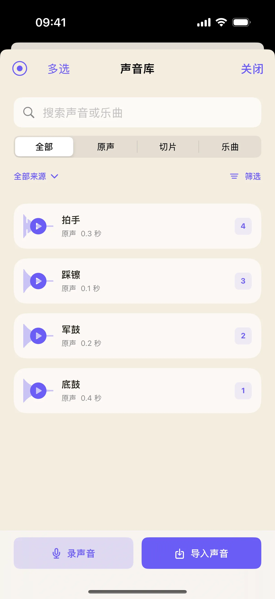
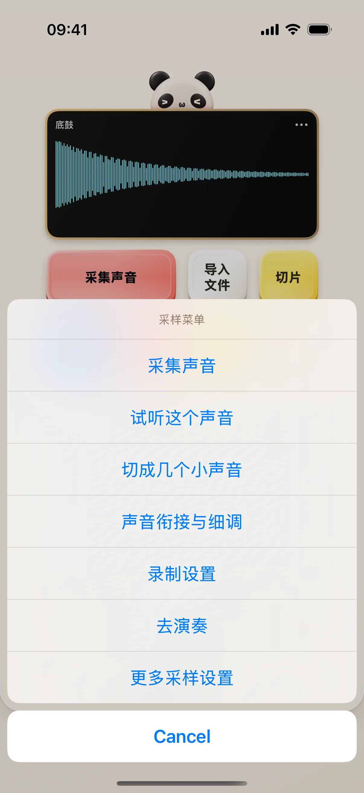
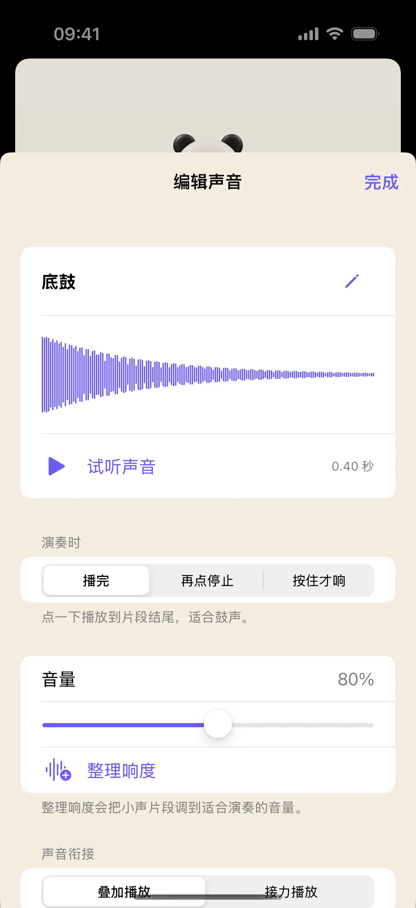

先用内置示例鼓声认识采样器，不必一开始就录音或导入长音乐。本教程把一颗鼓垫、它指向的声音和声音编辑页串起来，之后再换成自己的素材。
开始前准备
- iPhone / iPad 安装奶猫妙控 1.2.0。本练习不需要 Mac。调低音量后再开始，避免第一次试听过响。
- 使用内置示例或你有权使用的音频。截图中的底鼓、军鼓、踩镲和拍手是合成示例，不是用户录音。
1. 从声音库载入示例
在 App 底部点“布局”，在列表中找到“采样”。布局较多时用搜索框搜索名称；有多个桌面的方案先点右侧箭头展开，再点桌面名称；搜索具体桌面名称也能找到它。进入“录声音”桌面。初次使用没有声音时，点“声音库”，在空列表里点“试试示例声音”，等待加载完成后点右上方“关闭”返回桌面。
若声音库已有你的素材，这个空状态入口可能不会出现；可以选一段已有素材练习，不要为了匹配截图清空自己的工程。

2. 点一颗鼓垫，区分选中与发声
先点“底鼓”，再点“军鼓”，听一听两种声音。注意查看当前选中声音的名称；接下来打开的编辑页应对应你准备调整的那一个声音。
空鼓垫是添加声音的位置。它与已加载的底鼓不是同一种状态，不能仅凭格子存在就认为已经有音频可播放。
3. 打开采样菜单，进入声音细调
点上方小屏的采样菜单入口，选择“声音衔接与细调”。检查编辑页顶部显示的声音名称，再继续调整。
如果选错声音，先返回桌面重新选择。采样菜单还提供试听、采集和切片等入口；本练习先完成一颗声音的检查，再进入切片。

4. 先试听，再小幅调整音量
在声音编辑页点“试听声音”，拖动音量滑块做小幅变化，再试听比较。需要把很小声的片段调整到合适响度时，可试“整理响度”，并听清是否符合预期。
这不是对所有素材都适用的固定增益配方。观察显示值、听实际结果，必要时使用还原或撤销，不要一次把所有参数推到最大。

5. 分清叠加播放与接力播放
在“声音衔接”里查看“叠加播放”和“接力播放”。叠加允许声音同时发出；接力用于下一片开始时停止前一片。选择后返回鼓垫，用属于相应组的两个声音交替试听。
如果两个声音没有放进同一个互斥组，不应预期它们自动互相停止。需要跨来源接力时，在“声音细调”里核对互斥组。
6. 再换自己的素材，保留试听检查
掌握声音编辑后，可以返回录声音桌面点“导入文件”，或从采集入口录一小段声音。新素材进入声音库后，仍按“选择 → 试听 → 检查名称 → 调整”的顺序操作。
想切片时，从菜单进入“切成几个小声音”，先试听边界，再保存切片。导出的工程 ZIP 用于备份；当前没有应用内工程包导入界面，不要把备份包当成可直接重新导入的工程格式。
操作不符合预期时
点鼓垫没有声音？
先确认它已经绑定声音，再检查设备音量、音频输出和是否仍在录音。麦克风采集期间会暂停播放；空格子需要先添加声音。
为什么有些格子为空？
预设允许继续添加声音。四个示例只占一部分位置，空位不代表整个采样器不可用，也不需要强行填满才能演奏。
切片和完整原声是什么关系？
切片记录原声中的播放范围，原文件保留。先试听切片边界，再保存；不要把屏幕上的分界线理解成已经删除了原音频。
本文按奶猫妙控 1.2.0 的界面与操作编写，更新于 2026 年 9 月 10 日。查看更新日志 · 连接与权限帮助。